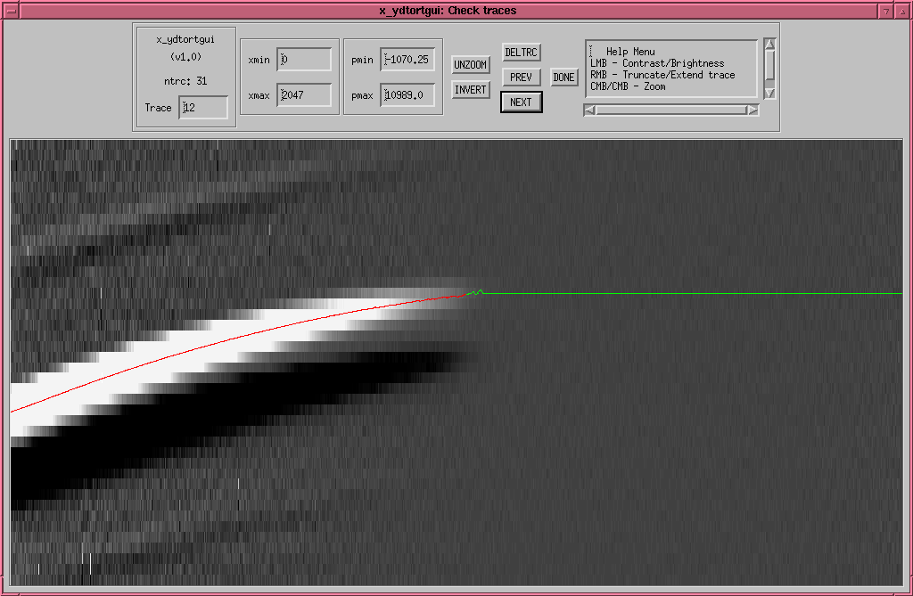
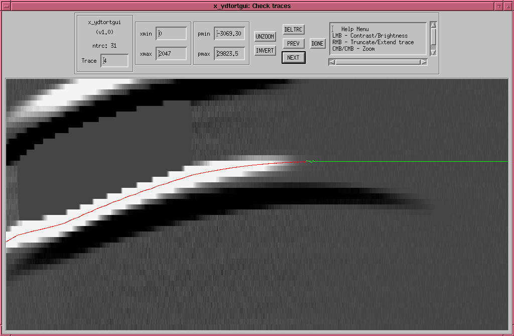

Screen shot of x_ydtorgui

- The red line traces the slit edge and the green line indicates
where the trace has too large of an error to fit.
- The right-mouse-button (RMB) can be used to extend/truncate the region
of the trace to be fit.
- The left-mouse-button (LMB) adjusts brightness/contrast.
- The "DELTRC" button deletes the trace altogether. Below is an
example of a bad trace. These often occur next to alignment boxes.
- Click on "NEXT" or "PREV" to cycle through the traces.

2004-06-10